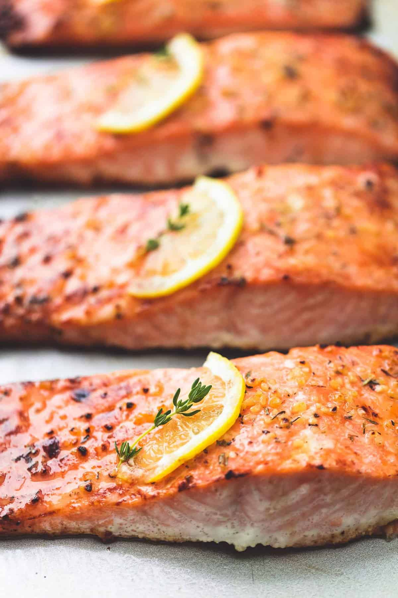

Oven Baken Salmon

Healthy and delicious! Who could ask for more?
If I had to pick my favourite fish to eat, salmon would win hands down.
This is one of the fastest recipes I know, taking at most 15 minutes
to make from start to finish. This is also possibly the easiest recipe
in my cookbook
A perfect mix of lemon and garlic brings out the full flavour of salmon
for the amount of prep it takes. If you are in need of a quick meal, then
this recipe is for you.
Ingredients
- 4 salmon fillets - 6 ounces each
- 2 tbsp olive oil
- 1/2 tsp salt
- 1/4 tsp cracked ground pepper
- 3 cloves of garlic, minced
- 1/4 tsp of dried thyme
- 1/4 tsp of parsley
- 1/4 tsp of oregano
- 1/4 tsp of basil
- 1 medium lemon
Steps
- Preheat the oven to 400 degrees and grease a large baking pan. Arrange
salmon fillets on the baking sheet and season generously with salt
and pepper.
- Stir together olive oil, garlic, herbs, and juice of 1/2 lemon.
Spoon over salmon fillets, being sure to rub all over the tops and
sides of the salmon so it has no dry spots. Thinly slice the remaining
1/2 of the lemon and top each piece of salmon with a slice of lemon.
- Bake for 12-15 minutes until the salmon is opaque and flaky when pulled
apart with a fork. You can broil the last 1-2 minutes if desired.
- Garnish with fresh thyme or parsley if desired, and serve.